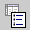
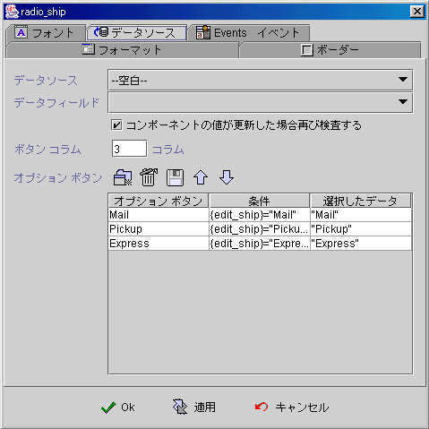
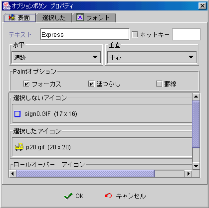
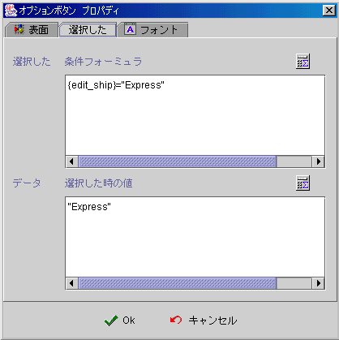
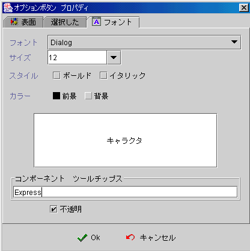
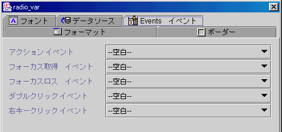

|

ラジオグループコンポーネント (Radiogroup component)

共通プロパティ (common properties)
データソース(data source)
新規ラジオボタン
(create new radio button)
イベント (event)
フォーミュラget/setプロパティ
(formula get/set properties)
データソース
(data source)
-
データソース (data source)：データソースの選択。
-
データフィールド (data field)：データソース中のフィールドの選択。
-
コンポーネント値が更新すると新たに検索：選択した時，他のコンポーネント値が更新されたか(changed)データソースが移動(move)、保存 (save)
或いは削除(delete)された時、いくつかのボタンが順序通りに選択条件
(selected
condition)の下で新たに計算されます。
-
コラム (columns)：ボタンをいくつかの枠に分割。
-
ラジオボタン (radio button)：新規、削除、保存、上へ、下へボタンの選択。

新規ラジオボタン (create Radio button)
表面 (face)
選択済み (selected)
フォント (font)
新規
 新ラジオボタンの新規追加 (radio button)。 新ラジオボタンの新規追加 (radio button)。
表面 (face)
-
テキスト (text)：ボタンの表示テキスト。
-
ホットキー
(mnemonic)：ホットキーの作成するにおいて、選択した後、
"ALT"キーを押しながら、指定するキーを押します。
-
水平 (text horizontal position)：テキストはマーク
(icon) に対する水平的な相対位置。
-
垂直 (text vertical position)：水平的な相対位置はセンター (center)
の時、テキストはマーク (icon)に対する垂直的な相対位置。
-
Paint アイテム：以下のプロパティはコンポーネントプロパティが不透明(opaque)の時のみ有効です。
-
Focus (paint focus)：
Focus 取得した (focus owner)時、文字前に Focus 枠線が現れます。
-
ペイント充填 (paint fill)：當選択ボタンを選択した時、コンポーネントはデフォルトペイント色を背景色にし、リリース
(release) した時、デフォルト背景色に戻ります。
-
外枠 (paint border)：選択ボタンの外枠が現れます。
-
選択なしアイコン (unselected icon)：選択されない
(unselected) 状態の表示マーク (icon)。
-
選択済みマーク (selected icon)：選択した
(selected) 状態の表示マーク (icon)。
-
ロールオーバーアイコン
(roll over icon)：ボタン上にマウスを移動し、選択していない時
(unselected)の表示マーク。

選択 (selected)

フォント (font)

▲Top
イベント
(event)
-
アクションイベント (action event)：ユーザはクリックした時
(clicked)、起動するイベント (fire event)。
-
Gain Focus イベント：Focus
が選択ボタンに入る時、起動するイベント 。
-
Lost Focus イベント： Focus が離れた時、起動するイベント 。
-
ダブルクリックイベント (double click event)：マウスダブルクリックした時、起動するイベント。
-
右キーイベント (right click event)：マウス右キーをクリックした時、起動するイベント。

▲Top
フォーミュラget/setプロパティ
(formula get/set properties)
SetProp("コンポーネント名",
"プロパティ",値) ：プロパティの設定。
SetProp("コンポーネント名",
"プロパティ", 値1, 値2)：プロパティの設定。
GetProp("コンポーネント名",
"プロパティ")：プロパティの読み取り。
| Set
Properties |
| プロパティ
(Properties) |
値1
(Value 1) |
値2
(Value 2) |
説明 (Descriptions) |
| enabled |
1 使用可能へ，0 無効 |
|
有効か無効。 |
| setfocus |
1 Focusの設定 |
|
Focusを設定。 |
| visible |
1 表示，0 隠し |
|
表示か隠し。 |
| repaint |
1 再描く，2 即時描く |
|
再描く。 |
| revalidate |
1 フォーミュラ再度計算 |
|
フォーミュラ再度計算を選択。 |
| selected |
N N 個目のボタン選択 |
|
N 個目ボタンの選択，N は 1から。 |
| Get
Properties |
| プロパティ
(Properties) |
転送値
(Return value) |
説明 (Descriptions) |
| isenabled |
1 使用可能，0 無効 |
有効か無効。 |
| isvisible |
1 表示，0 隠し |
表示か隠し。 |
| selected |
N N 個目のボタン選択 |
N 個目ボタンの選択，N は 1から。 |
▲Top
Copyright © 2001~
2004 Probe Technology . All Rights Reserved.
Questions, comments,
and suggestions to Service@probe.com.tw
|